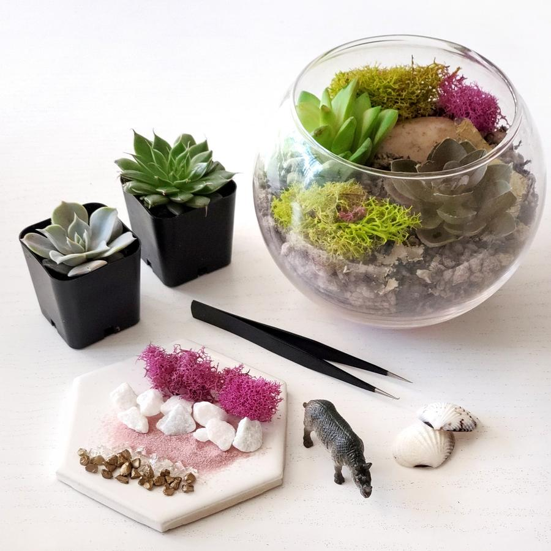
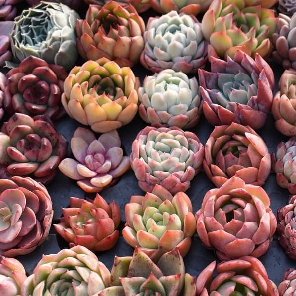

Current Class: DIY Terrarium Kits
Come join us at Succs to Succ to make and recieve your own Succulent Terrarium kit! You will be taught by succulent enthusisit Yulia with classes from 2pm-4pm, and 6pm-8pm.
Current Event: Succulent Galore!
Come and join us at Succs to Succ to purchase new and very rare succulents at our first Succulent Galore! You'll be able to find the rarest sucuclents from all over the world right here in our store this holiday season. Join us from 8AM - 10PM!
Daily Tip:
Unsure how to water your succulent? Try to bottom water to prevent over watering!